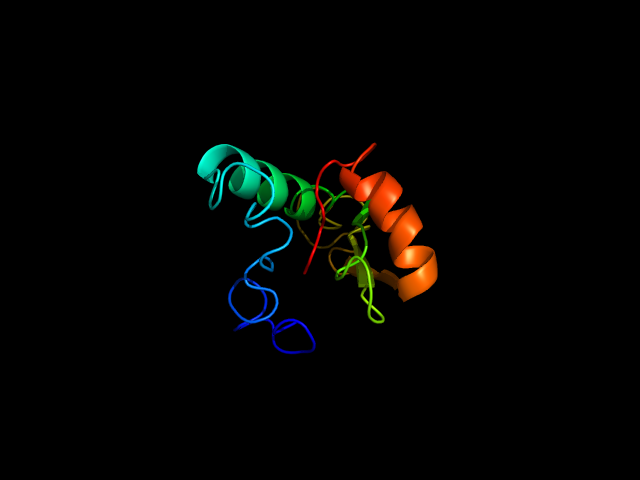
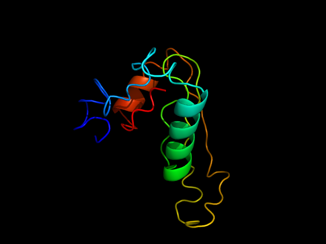
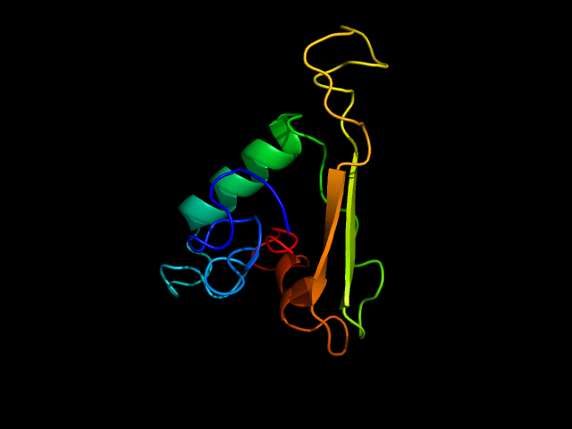
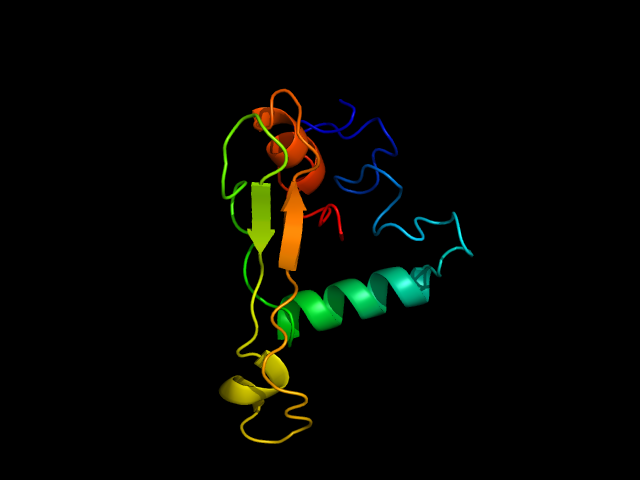
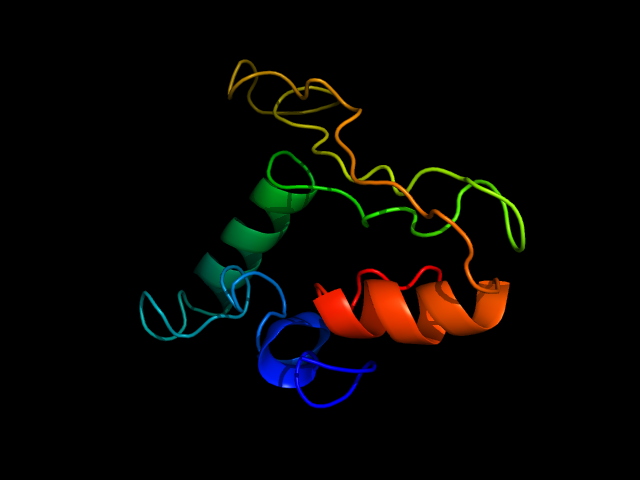

| >csp_haplot (109 residues) HNMPNDPNRNVNENAKANSAVKNNNNEEPSDQHIKKYLNTIKNSISTEWSPCSVTCGNGI QVRIKPGSAGKSKNQLNYANDIEKKICKMEKCSSVFNVVNSSIGLIMVL |
|
20 40 60 80 100 | | | | | HNMPNDPNRNVNENAKANSAVKNNNNEEPSDQHIKKYLNTIKNSISTEWSPCSVTCGNGIQVRIKPGSAGKSKNQLNYANDIEKKICKMEKCSSVFNVVNSSIGLIMVL | |
| CCCCCCCCCCCCCCCCCCCCCCCCCCCCCCHHHHHHHHHHHHCCCCCCCCCCSSSCCCCSSSSSSCCCCCCCCHHCCCCCCCSSSSSSCCCCCCHHHHHCCCCCSSSSC | |
| 9999888888887676776666888889869999999999875667887887555799989999768888985557777874556776777874888754765479979 | |
| H:Helix; S:Strand; C:Coil | |
|
20 40 60 80 100 | | | | | HNMPNDPNRNVNENAKANSAVKNNNNEEPSDQHIKKYLNTIKNSISTEWSPCSVTCGNGIQVRIKPGSAGKSKNQLNYANDIEKKICKMEKCSSVFNVVNSSIGLIMVL | |
| 5523233343233323222223322332123310320032043212231120001013111111220222324330222332111102134021001003221000012 | |
| Values range from 0 (buried residue) to 9 (highly exposed residue) | |
|  Download Model 1 |  Download Model 2 |  Download Model 3 |  Download Model 4 |  Download Model 5 |